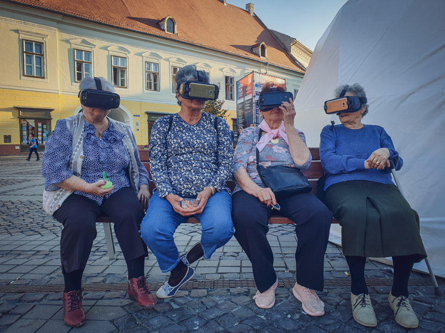
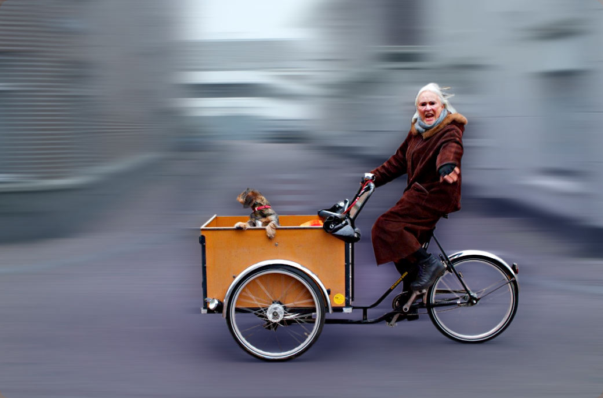
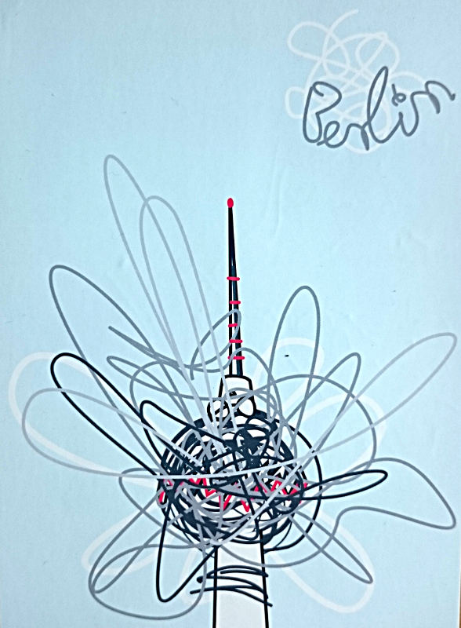
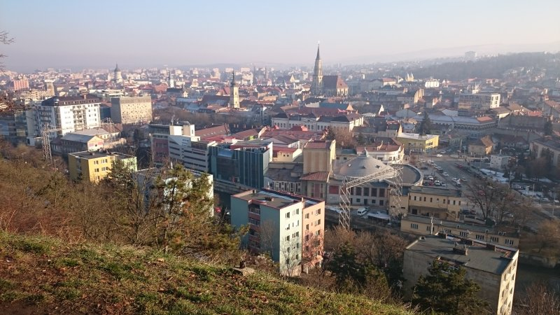

Events
Here’s a list of all the activities that happened and are going to happen:
Canceled: March 2020 — Sibiu, Romania
- Arrival is on Thursday evening, March 5
- Departure is on Monday morning, March 9
(If you can't make the whole event, feel free to join and leave at your convenience.) - Venue is Sibiu, Romania, in a hostel. We're not sure which hostel yet, it will depend a bit on how many people sign up. However: first come, first serve!
Here's the deal:
Our last three meetups were fairly touristy in nature. We had super interesting discussions along the way but those were a side thing. Now we want to try something new and shift the focus a little towards the interestingness. We're going to form the worlds first WBW echo chamber idea lab! HA!
Here's how it works:
Think about things that fascinate or worry you and that you would like to share or discuss with a bunch of WBW-esque people from all kinds of backgrounds. Open our eyes! Teach us something cool! Ask our opinion! Be heard!
And do so by giving a little presentation or leading a little workshop or holding a little discussion about it. We encourage you but we're not gonna force you. If you're too introvert for that, just join and be awesome.
And yes, of course there will also be a bit of touristicism. And of double course there is also a typeform for you to sign up:
https://mqnc775288.typeform.com/to/SMiVxE
Looking forward to meeting you!
March 2018 — Haarlem near Amsterdam, Netherlands
For our third meeting, we checked out Haarlem and Amsterdam. We visited a museum with crippled baby corpses, a nerd convention, stayed faithful to our tradition and took a guided city tour through Haarlem, visited a windmill, hell, boat trip, prostitution museum, oh so much going on! Too lazy to summarize.
Just read the report!
August 2017 — Berlin, Germany
We camped in the South of Berlin for five nights and did lots of stuff. On Saturday we went on an epic hike around the camping area. If you're in Berlin, exploring Nazi stuff is obligatory, so on Sunday we visited the underworlds of Berlin and had a picnic at Tempelhofer Feld, an abandoned airport. Monday was about sight-seeing. We took an alternative city tour through the street art of Berlin and then we watched some actual sights. In the evenings we sat around a camp fire and were awesome. This was our second meeting and it was even a bit amazinger than the first one for some reason. Probably because there was more bonding time.
Read all about it here!
December 2016 — Cluj-Napoca, Romania
We occupied a hostel for a weekend and did cool stuff all over the place. On Saturday we visited the shit out of that peasant museum and took a guided tour through Cluj which is full of history and interestingness. On Sunday we went to Salina Turda, a famous salt mine which is now a touristic attraction. However, the whole thing was more about the fantastic WaitButWhy-ish atmosphere, about connections and friendships that were created and about the ideas and awesomenesses that were spread and all this pathetic stuff. Most of all: We started something back then, which is now that you read this probably years later probably a huge thing.
For a detailed report, check out the detailed report!